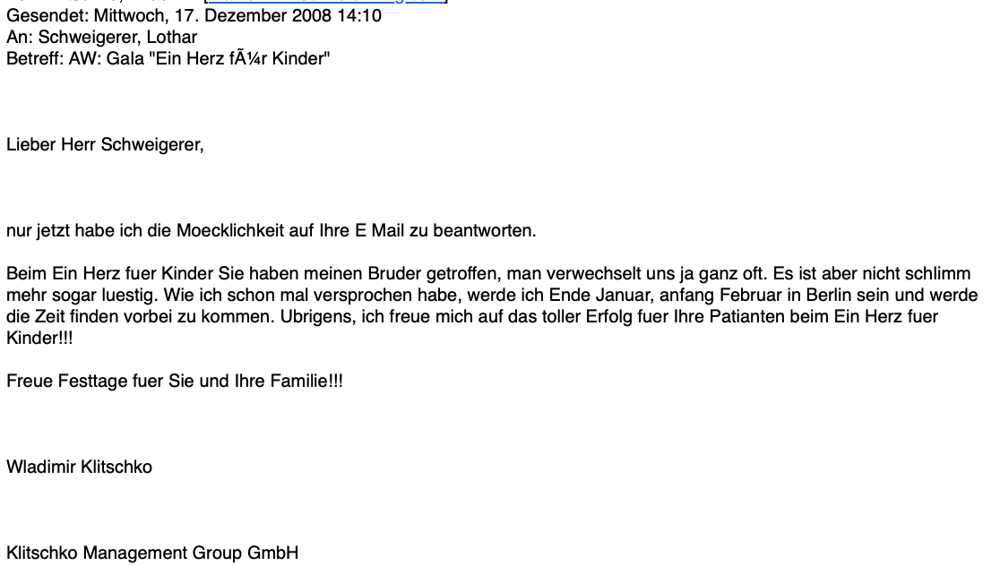
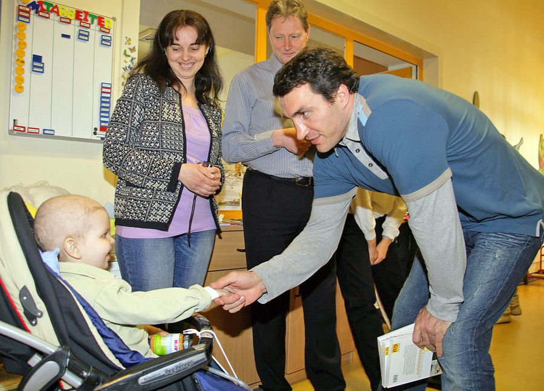
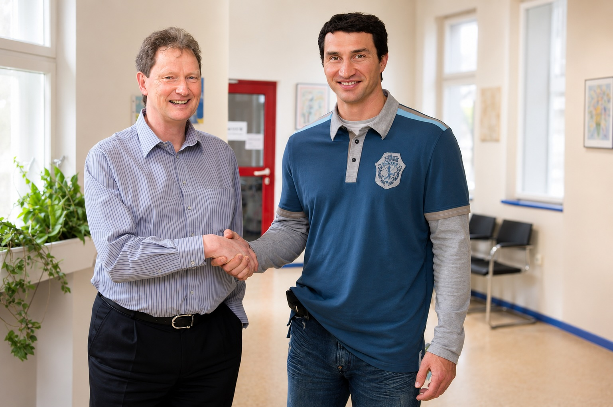

Nach meinem kurzen Gespräch mit Vitali Klitschko und Thomas Gottschalk auf der Bühne der "Ein Herz für Kinder"-Gala rechnete ich ehrlich gesagt nicht damit, jemals wieder etwas von den Klitschkos zu hören. Ich irrte mich.
Einige Zeit später erhielt schrieb ich an die Klitschko-Stiftung, bedankte mich für den Auftrittich und lud Wladimir zu einem Besuch in der Kinderklinik ein. Auf der Bühne war ich mit Vitali gewesen. Einige Tage später schrieb Wladimir mir zurück. Er nahm die Verwechslung mit Humor und kündigte seinen Besuch für Ende Januar / Anfang Februar 2019 an. Und er kam tatsächlich! Während der Fahrt rief er sogar noch einmal von seinem Handy aus an und teilte mir seine voraussichtliche Ankunftszeit mit. Ich habe seine Handynummer übrigens bis heute gespeichert.

Pünktlich bog ein VW-Bus auf das Klinikgelände. Keine Bodyguards. Keine Presse. Keine Fotografen. Nur Wladimir und ein oder zwei Begleiter. Genau so hatte ich ihn nicht erwartet.
Er kam zunächst in mein Büro. Wir begrüßten uns mit Handschlag. Ich habe nicht gerade kleine Hände. Aber gegen seine wirkten sie fast zierlich. Das Erste, was mir auffiel, waren seine riesigen Pranken. Nach wenigen Minuten sagte er:
„Du kannst ruhig Du zu mir sagen.“
Damit war das Eis sofort gebrochen.

Anschließend gingen wir gemeinsam auf die Station. Die kleinen Kinder wussten natürlich gar nicht, wer dieser Besucher war. Die meisten waren noch viel zu jung, um sich für Boxen zu interessieren. Für sie war er einfach ein freundlicher Besucher, der sich zu ihnen setzte, mit ihnen sprach und kleine Geschenke mitgebracht hatte.
Ganz anders die Eltern. Sie waren weit weg von ihrer Heimat, lebten seit Wochen oder Monaten in Berlin und bangten jeden Tag um das Leben ihrer Kinder. Plötzlich stand einer der bekanntesten Männer ihres Landes vor ihnen, sprach mit ihnen in ihrer Muttersprache und nahm sich Zeit. Ich glaube, für die Eltern war dieser Besuch sogar wichtiger als für ihre Kinder.
Wir gingen von Zimmer zu Zimmer. Zunächst besuchten wir alle ukrainischen Kinder. Anschließend gingen wir auch zu unseren deutschen Patienten. Wladimir machte keinen Unterschied. Er unterhielt sich mit den Eltern, scherzte mit den Kindern und hörte aufmerksam zu. Nichts wirkte einstudiert oder aufgesetzt.

Den Besuch hatten wir bewusst kaum angekündigt. Das war Wladimirs Wunsch. Deshalb war die Überraschung auf der Station umso größer. Viele Mitarbeiter, Eltern und Besucher konnten zunächst kaum glauben, dass Wladimir Klitschko plötzlich persönlich vor ihnen stand. Presse war keine dabei. Fernsehkameras ebenfalls nicht.
Wer ein Erinnerungsfoto machen wollte, durfte selbstverständlich eines machen. Wladimir stellte sich geduldig zu jedem, der ihn darum bat. Aber nie hatte ich den Eindruck, dass es ihm um Öffentlichkeit ging. Im Mittelpunkt standen die Kinder. Fast zwei Stunden blieb er bei uns. Für jemanden mit seinem Terminkalender war das alles andere als selbstverständlich.
Als wir uns verabschiedeten, sagte Wladimir, seine Stiftung werde meine Projekte in der Ukraine gerne unterstützen.
Damals hielt ich das für eine freundliche Bemerkung.
Wenig später stellte sich heraus, dass auch dieses Versprechen ernst gemeint war.